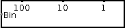

| Library: | BFH mega functions |
| Introduced: | 3.x.x |
| Appearance: |  |
This component converts an unsigned binary number into binary-coded-decimal format. It takes one input, the number to be converted. Each four-bit output represents a decimal number from zero to nine. There are a sufficient number of four-bit outputs to represent any possible input. For example, for an eight-bit input ranging from 0 to 255, there will be three four-bit oututs, representing the "one's place", "ten's place", and "hundred's place".
None.
Supports VHDL synthesis.